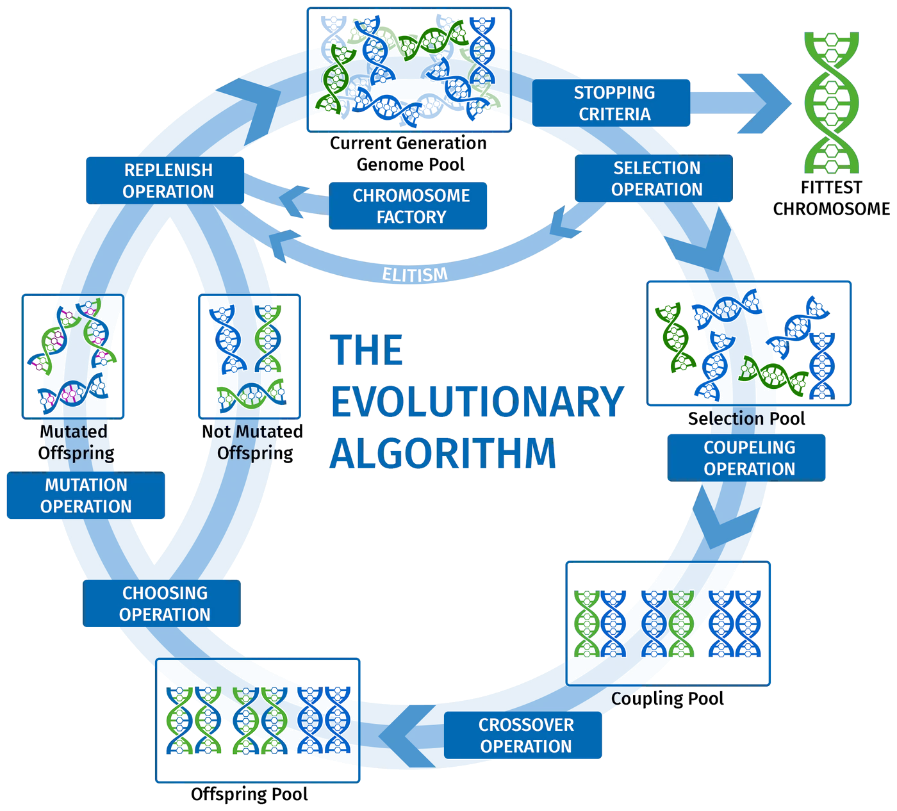

01geneial
2012 — 2017Some problems are too big to solve exactly — so you let solutions evolve. geneial is a C++ library for genetic algorithms in which every step of evolution is an exchangeable building block.
- Type
- C++11 library
- License
- MIT
- Authors
- Wolters · Netz · Nellen

-
The idea
A genetic algorithm imitates evolution. A population of candidate solutions — chromosomes — is rated by a fitness function; the best are selected, paired, recombined and randomly mutated, and the next generation is formed from the offspring, an elite of the old generation and a few fresh random candidates. Repeated over many generations, the population drifts towards good solutions, even for problems that cannot be solved exactly in reasonable time.
-
Where it comes from
geneial was created at RWTH’s Theory of Hybrid Systems group in the context of the DFG project OASys — online algorithms for the optimal control of hybrid propulsion systems. There it served as the framework for a genetic-algorithm-based control strategy for the energy management of plug-in hybrid vehicles: when should the combustion engine run, when the electric motor?
-
The library
geneial is a template-based C++11 library. Each stage of the loop in the figure above — stopping criteria, selection, coupling, crossover, choosing, mutation, replacement — is an operator with its own builder, so users plug in their own chromosome types, operators and fitness functions. Fitness evaluation can run multi-threaded, and observers and bookkeepers make runs analysable. The project comes with a CMake build, Boost unit tests, benchmarks, Doxygen documentation and CI. A minimal run:
auto evaluator = std::make_shared<DemoChromosomeEvaluator>(); ContinousMultiValueChromosomeFactory<int,double>::Builder factoryBuilder(evaluator); factoryBuilder.getSettings().setNum(20); factoryBuilder.getSettings().setRandomMin(20); factoryBuilder.getSettings().setRandomMax(130); auto algorithm = SteadyStateAlgorithm<double>::Builder() .setChromosomeFactory(factoryBuilder.create()).create(); algorithm->getPopulationSettings().setMaxChromosomes(100); algorithm->solve(); std::cout << *algorithm->getHighestFitnessChromosome() << std::endl; -
Wind farms
Later I used geneial for a different problem [Net17]: placing the turbines of an offshore wind farm, rated by annual energy production, net present value and internal rate of return on the Horns Rev test cases. The question was whether turbine positions should be free continuous coordinates or points on a grid. The answer was clear: as long as the grid is fine enough, discretised gene parameters converge faster and reach better results in every test case.
- Net17
- NWN+15
-
GJN+15a
Learning-based Control Strategies for Hybrid Electric VehiclesS. Geulen, M. Joševski, J. Nellen, J. Fuchs, L. Netz, B. Wolters, D. Abel, E. Ábrahám, W. UngerIEEE Conference on Control Applications (CCA) 2015